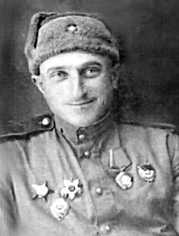

Mikhail Ilyich Surkov
Михаил Ильич Сурков (1921 — 1953) was a Soviet sniper in the 4th Rifle Division of the Red Army during World War II. He has 702 confirmed kills during World War II and that makes him the most effective sniper of the European conflict.
Vasilij Kvachantiradze
Василий Шалвович Квачантирадзе (1907 - 1950) was a top Soviet sniper during World War II. He entered Red Army service in 1941 and is credited with confirmed kills numbering at least 215 officers and soldiers of the German Wehrmacht during the Vitebsk-Orsha Offensive, and around 534 confirmed kills total during Operation Bagration or during the war.
Simo Häyhä
Simo (1905 - 2002) was nicknamed "White Death" by the Red Army. Using a Finnish-produced M/28-30 rifle (a variant of the Mosin–Nagant rifle) and a Suomi KP/-31, he reportedly killed 505 men (according to other sources he is credited with 542) during the 1939–40 Winter War, the highest recorded number of sniper kills in any major war.
Ivan Sidorenko
Ива́н Миха́йлович Сидоре́нко (1919 – 1994) was a Red Army officer and a Hero of the Soviet Union, who served during World War II. He was one of the top Soviet snipers in the war, with 500 confirmed kills.
Fyodor Okhlopkov

Фёдор Матве́евич Охло́пков (1908 – 1968), was a Soviet sniper during World War II, and credited with as many as 429 kills.Okhlopkov was one of the most effective snipers in the Red Army during World War II. He was granted the status of Hero of the Soviet Union in 1965 as well as an Order of Lenin, after complaints he had been overlooked for the citations due to his ethnicity